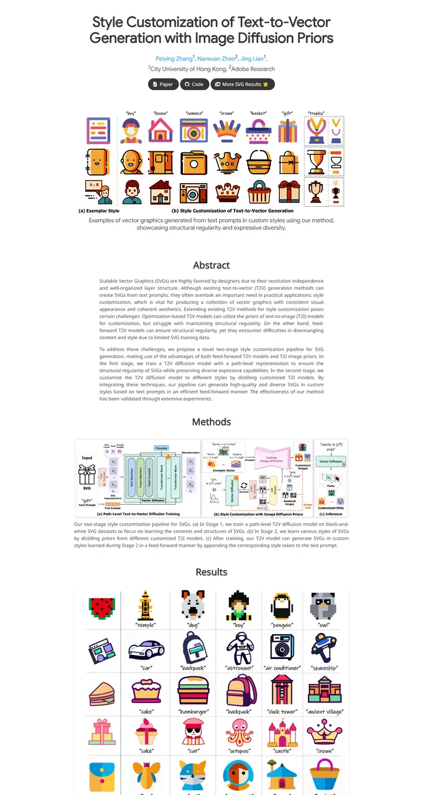

Style Customization of Text-to-Vector Generation with Image Diffusion Priors
白い壁に留めたステッカーシート。フラットなオレンジ、赤、バイオレットのアイコンが並び、それぞれに手書きのラベル、行は破線で区切られている。

表示されたページと照合済みです。
選んだ理由
中央揃えのすっきりしたレイアウトで、ティーザーと結果をキャプション付きのアイコングリッドと破線の区切りで見せています。研究成果そのものがビジュアルシステムになっています。
以下の説明と DESIGN.md 本文は英語です。コーディングエージェントが同じ一つの版を読めるよう、翻訳していません。
概要
カラーパレット
タイポグラフィ
Google Sans
Style Customization of Text-to-Vector Generation with Image Diffusion
Abstract · Method · Results · BibTeX — 0123456789
Noto Sans
Style Customization of Text-to-Vector Generation with Image Diffusion
Abstract · Method · Results · BibTeX — 0123456789
handwritten labels
Style Customization of Text-to-Vector Generation with Image Diffusion
Abstract · Method · Results · BibTeX — 0123456789
余白と形
ページの構成要素
ガイドライン
似たスタイル

Scaling Text-Rich Image Understanding via Code-Guided Synthetic Multimodal Data Generation
大学出版局のカタログ。スモールキャップスのセリフ体タイトル、標本を並べたカラーホイール、土の色の棒グラフ。

DICE-BENCH: Evaluating the Tool-Use Capabilities of Large Language Models in Multi-Round, Multi-Party Dialogues
ゲームの箱絵をまとった Nerfies ページ。チャコールのサイコロバナーがアイデンティティを刻み、パステルのブランド色のピルとグレーのカルーセル帯が、静かな2カラムの手法解説へと導く。

TUNA: Comprehensive Fine-grained Temporal Understanding Evaluation on Dense Dynamic Videos
スコアボードから始まるベンチマーク。魚のロゴを添えたスモールキャップスのワードマーク、グラデーションの会議名の行、そしてグレーのヘッダーとゼブラ行、青いモデルリンクを持つ全幅のリーダーボード。

Gesturing Toward Abstraction: Multimodal Convention Formation in Collaborative Physical Tasks
きれいな紙に刷ったゼミの配布資料。大きく柔らかな見出し、6つのチャコールのタブ、そしてブロックを説明する手を描いたティールとマゼンタのコマ漫画。

Making Multimodal LLMs Reliable Chart Data Extractors: A Benchmark and Training Framework
いちばん出来のいいページを開いた実験ノート。モニターのベゼルのように縁取られた動画、見出しには絵文字、どの図も柔らかな影をまとってピン留めされている。

What If Moderation Didn't Mean Suppression? A Case for Personalized Content Transformation
書見台に紫のリボンが掛かった静かな閲覧室。スレート色のサンセリフ見出し、Garamondの本文、そして壁に留められた温かな琥珀色のメモが一枚。